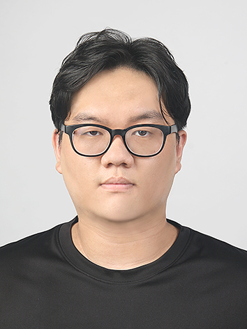

청주대학교에서 스포츠재활을 연구하고 가르치고 있습니다. 근전도(EMG), 가속도계, 동작 분석 데이터에서 움직임의 생체역학적 패턴을 찾고, 그 패턴으로 재활 중재의 효과를 정량화하는 일을 합니다.

근전도, 동작 분석, 가속도계 데이터에서 움직임을 설명하는 생체역학적 패턴을 파이썬으로 뽑아내는 일을 합니다.
관심 영역은 크게 세 가지입니다. 첫째, 근육시너지 분석에서 비음수 행렬 분해(NMF) 기반으로 근육 협응 패턴을 뽑아내고 임상적 의미를 해석합니다. 둘째, 생체역학 분석에서 동작 포착과 가속도계 데이터를 활용해 보행·자세와 신체활동량을 정량화합니다.
셋째, 재활 중재 효과 검증에서 뇌손상·뇌졸중 환자의 보행과 자세 조절을 대상으로 전기자극(FES)·운동학습 중재의 효과를 정량적으로 분석합니다.
비음수 행렬 분해(NMF)와 k-means 군집화 기반 근육 협응 패턴 분석. 표면 근전도(EMG) 신호에서 임상적으로 의미 있는 구조를 추출.
3D 동작 포착(C3D), 관절 가동범위 산출, 보행 분석. 가속도계 기반 신체활동 측정과 에너지 소비량 예측.
뇌손상·뇌졸중 환자의 보행과 자세 조절을 대상으로 전기자극(FES), 운동학습 중재의 효과를 정량적으로 분석. 낙상저항력 예측 포함.